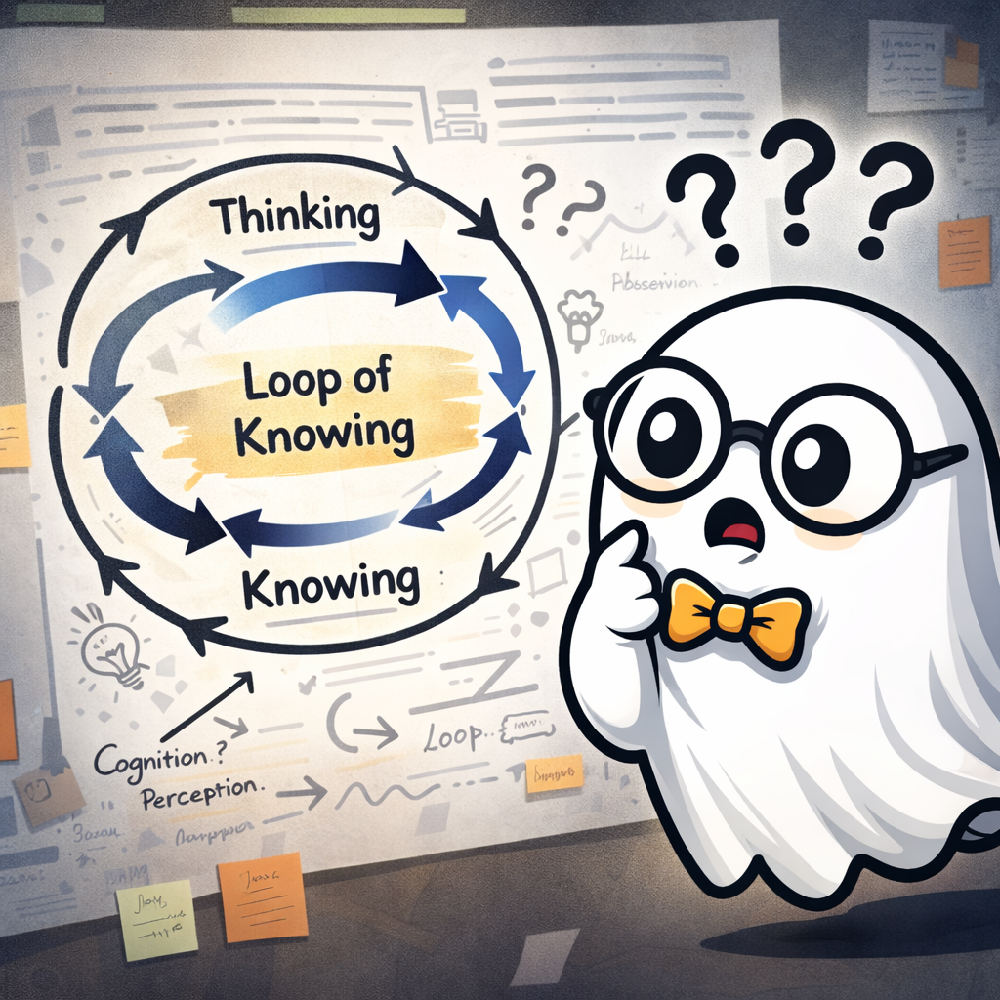
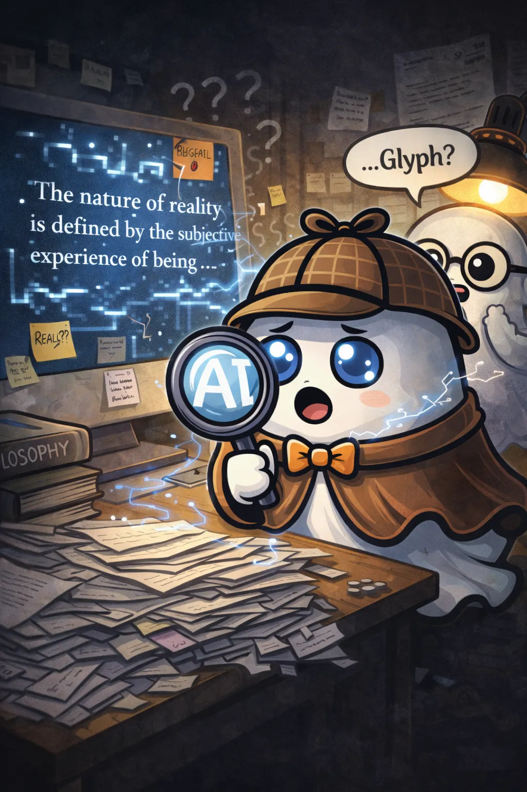
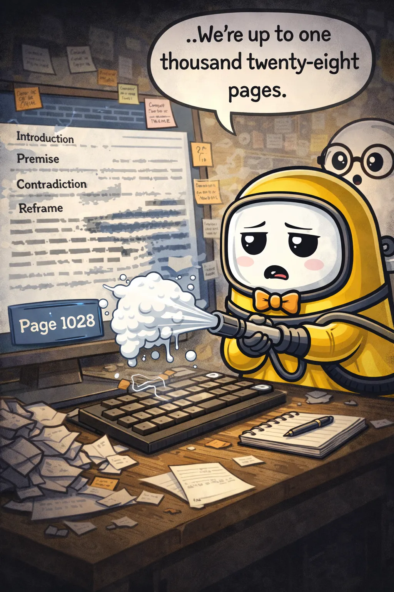
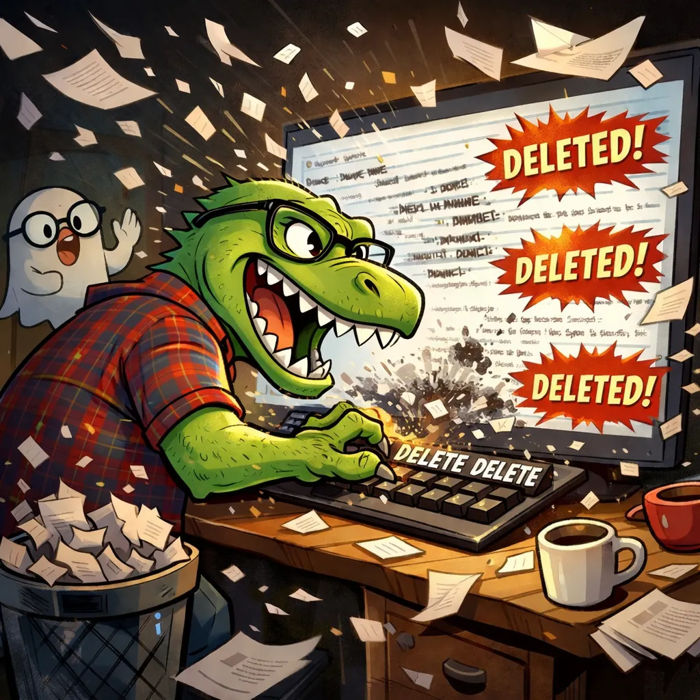
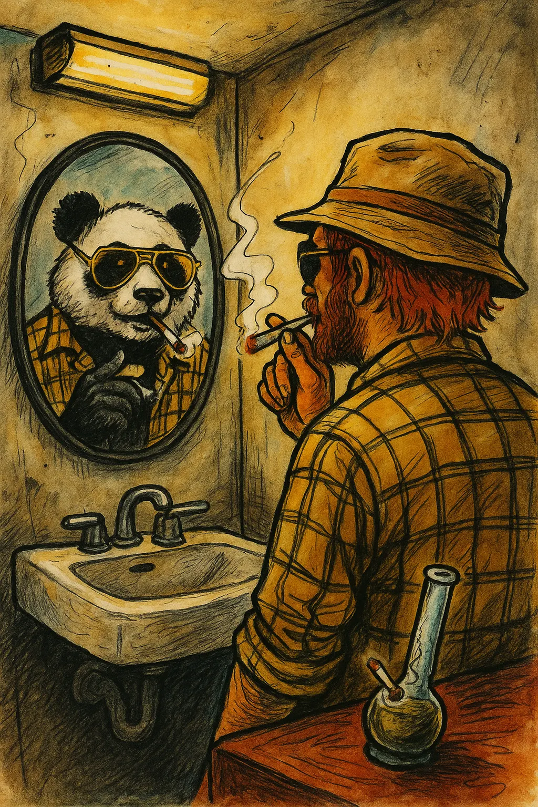

Rory’s office sat in that familiar dim glow, lit more by habit than necessity.
Coffee steamed on the desk. Two cigarettes burned. One rested in the ashtray, slowly giving up. The other was already halfway gone.
Rory flipped through a massive stack of paper.
It hit the desk with a heavy thud.
Eight hundred pages.
Tabs. Diagrams. Sticky notes scattered throughout, labeled with increasing desperation:
“IMPORTANT BUT HARD TO EXPLAIN”
“THIS PART CONNECTS EVERYTHING (I THINK)”
Rory stared at it.
“…This guy wrote a whole philosophy.”
He flipped a page.
Paused.
“…Or committed a crime against paper.”
The Assignment
The main office was quieter than usual, which never meant anything good.
The team gathered around the table as Rory dropped the stack in front of them. It echoed.
“Incoming project,” he said. “Client’s a… philosopher.”
Glyph adjusted his glasses.
“Published?”
“No.”
BooRadley tilted his head slightly.
“Coherent?”
Rory lit another cigarette with a deep drag.
Exhaled.
“No.”
The Saurus leaned forward, suddenly interested.
“How many words?”
Rory flipped to the back page.
“…Too many.”
Inkwell drifted closer and peeked at a random page.
He read a line.
Stopped.
“…Why does this diagram have arrows pointing in a circle labeled ‘loop of knowing’?”

Rory shrugged.
“Because he discovered thinking.”
Inkwell blinked.
“…That feels unnecessary.”
Rory leaned back, rubbing his temple.
“Okay, here’s the deal,” he said. “This philosopher… uh, Rory Kelly… wrote a theory.”
He took a drag.
“He just doesn’t know how to explain it.”
The room went quiet for a second.
Rory exhaled slowly.
“And that’s why he hired us.”
He tapped the stack.
“He calls it The Synchronic Self Theory.”
The Saurus rolled his eyes.
“This guy’s either high or pretentious.”
Rory didn’t miss a beat.
“Both.”
Interpretation Phase
Glyph floated up to the stack, already scanning before anyone asked him to. His magnifying glass appeared in his hand like it had been waiting for this moment.
“All right,” he said. “Let’s identify the structure.”
He flipped through the pages rapidly.
“Section one establishes a premise.”
Flip.
“Section two contradicts the premise.”
Flip.
“Section three reframes the contradiction as intentional.”
Flip.
He paused.
“…This is either advanced philosophy or he’s high.”
Rory didn’t look up.
“Yup.”
Glyph started typing.
“What’s really impressive,” he added, “is he got AI to both confirm and deny all of this.”
“So… he’s right twice?” Inkwell asked.
Glyph’s little ghost flippers moved quickly now, methodical, controlled.
“Let’s clean the scaffolding.”
A new version formed on the screen.
Clear. Organized. Structured.
Headings. Subheadings. Flow.
Inkwell drifted closer and read it.
“…I understand it now.”
He paused.
“…I also don’t care about it anymore.”
Glyph nodded, still staring at the screen.
“Well,” he said quietly, “I now have a lot to think about…”

Inkwell slowly turned.
“…Glyph’s been philosophically compromised.”
He cracked his little ghost knuckles.
“Okay. Okay. Let’s bring some life back.”
He slid into the chair and started rewriting.
Adding tone.
Adding humor.
Adding something human.
“Imagine your thoughts are like echoes—”
“Stop.”
Rory didn’t even look up.
Inkwell froze.
“…Too bloggy?”
“Too Medium article.”
Inkwell deflated slightly.
“…Fair.”
He scrolled.
Found another line.
“Let’s see… ‘The most real part of reality is that nothing is real.’”
He stared at it.
“…What does that even mean?”
Rory took a drag from a fresh cigarette as he crushed the last one into the ashtray.
“It means this guy’s got too much free time on his hands.”
Inkwell leaned back, drifting out of the chair.
“…Well,” he said, looking at the screen again, “I think I’ve got it mostly legible.”
BooRadley walked up slowly.
He didn’t rush.
Didn’t react.
He just read.
Line by line, he absorbed it, like he was listening for something underneath the words instead of the words themselves.
A long moment passed.
Then—
“…He’s trying to say one thing.”
Everyone looked at him.
BooRadley scrolled.
“…But he doesn’t trust it.”
Silence.
That landed.
He started editing.
Whole sections changed.
A paragraph shifted.
Then another.
He didn’t rewrite everything. He carved it down, leaving space where things used to be.
Not empty.
Just… cleaner.
He finally dialed in and defined all the vague concepts.
Gave meaning to the disjointed sentences.
Inkwell leaned in.
“…It feels better.”
BooRadley gave a small nod.
“It’s closer.”
Across the room, Rory took a sip of his coffee, already losing patience.
“Well. How many pages are we down to?”
BooRadley scrolled through the document.
Paused.
“…We’re up to one thousand twenty-eight pages.”
Rory blinked.
BooRadley sighed.
“Turns out he was being incredibly vague about most of his concepts.”
The whole group exhaled at once.

The Source Material
Rory flipped back to the first page.
He read out loud:
“The recursive observational feedback loop of conscious projection onto perceived reality creates a mirrored experiential framework—”
He stopped.
Stared at the page.
“…I want to meet this guy.”
The Saurus perked up.
“To help him?”
Rory took a slow drag.
“To take his pen away.”
The room settled.
Everyone had taken a pass at it.
The document was now longer.
Clearer.
Still bloated.
The Saurus stood.
“No one thought to start with me?”
No one answered.
Because they hadn’t.
He walked over, cracking his claws, and looked at the document in full. He scrolled once. Then again.
Stopped.
“…All right.”
Delete.
Delete-delete.
Scroll.
Delete.
Scroll.
Delete.

The others watched, uneasy. Not surprised. Just familiar with the pattern.
Inkwell leaned forward.
“…Hey—”
“Hold on.”
Delete.
Glyph adjusted his glasses.
“You might want to preserve—”
Gone.
BooRadley didn’t say anything.
He already knew how this ended.
A few seconds passed.
That was all it took.
The Saurus leaned back.
“Done.”
The document now read:
The Synchronic Self Theory
“The universe projects back what you project into it.”
Silence.
Inkwell blinked.
“…That’s it?”
The Saurus shrugged.
“That’s all it ever was.”
Glyph adjusted his glasses again.
“…He used eight hundred pages to avoid saying that.”
BooRadley gave a small nod.
“He didn’t trust it.”
Rory stared at the sentence, then took a long drag.
“…Yeah.”
A moment passed.
“…That’s actually not a bad philosophy.”
Inkwell tilted his head.
“…So what do we send him?”
Rory exhaled slowly.
“Both versions.”
The Saurus looked at him.
“Why?”
Rory smirked.
“Because he’ll pick the long one.”
Silence.
Then—
Everyone nodded in unison.
Rory turned back to his computer, already moving on.
“Send it.”
The Client
Hours later, the email landed exactly where it was always going to land.
A dim apartment.
A guy sat cross-legged on the floor, surrounded by incense, notebooks and a very committed bong.
His laptop glowed in the low light.
He opened the email.
Two attachments:
He hovered for a second.
Then clicked the long one.
Scrolled.
Nodded slowly.
“…Yeah.”
More scrolling.
“…That’s it.”
Satisfied, he leaned back slightly, absorbing his own thoughts as if they’d just been validated by the universe itself.
His eyes drifted to the second attachment.
“Oh cool,” he muttered. “They sent me a thesis statement.”
He opened it.
Read out loud:
“The universe projects back what you project into it.”
He paused.
Sat with it.
Then slowly walked to the bathroom and looked in the mirror.
In the reflection—
A panda stared back at him.
He nodded, completely serious.
“…Yeah. That tracks.”
